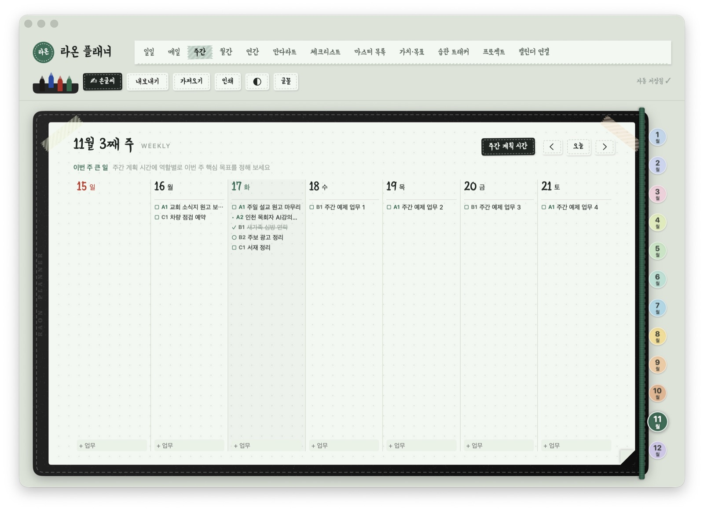
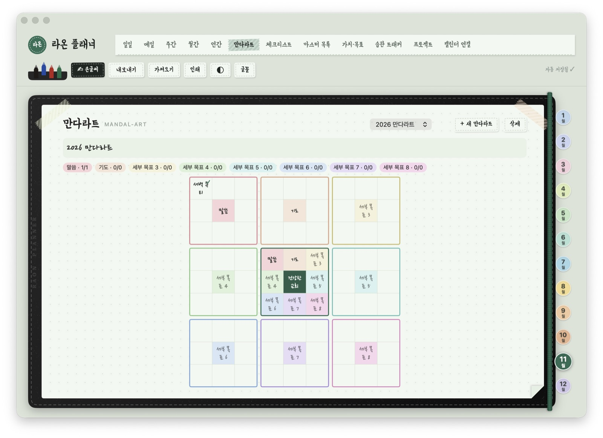
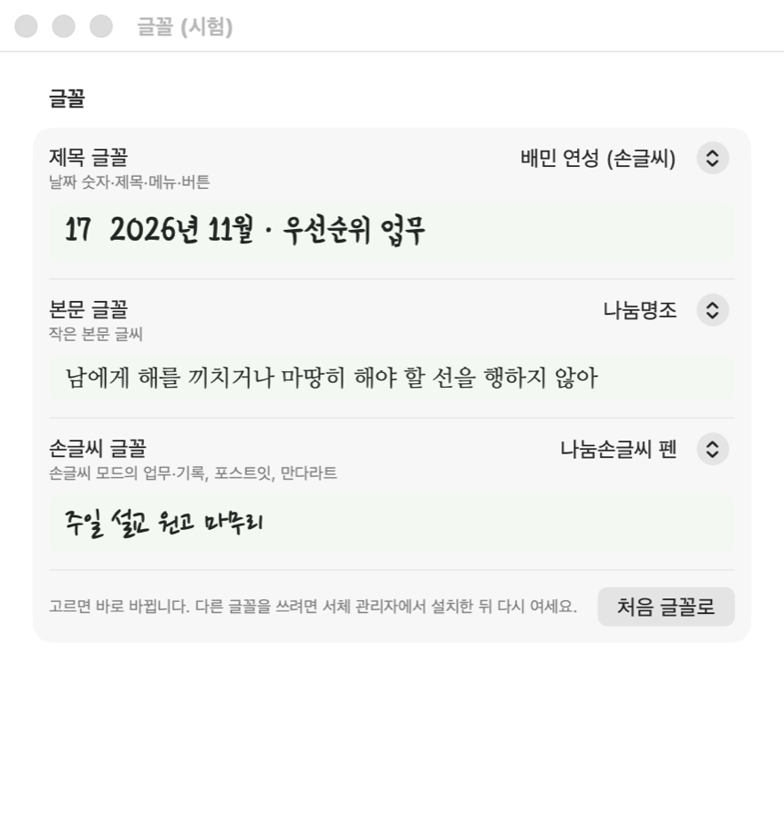
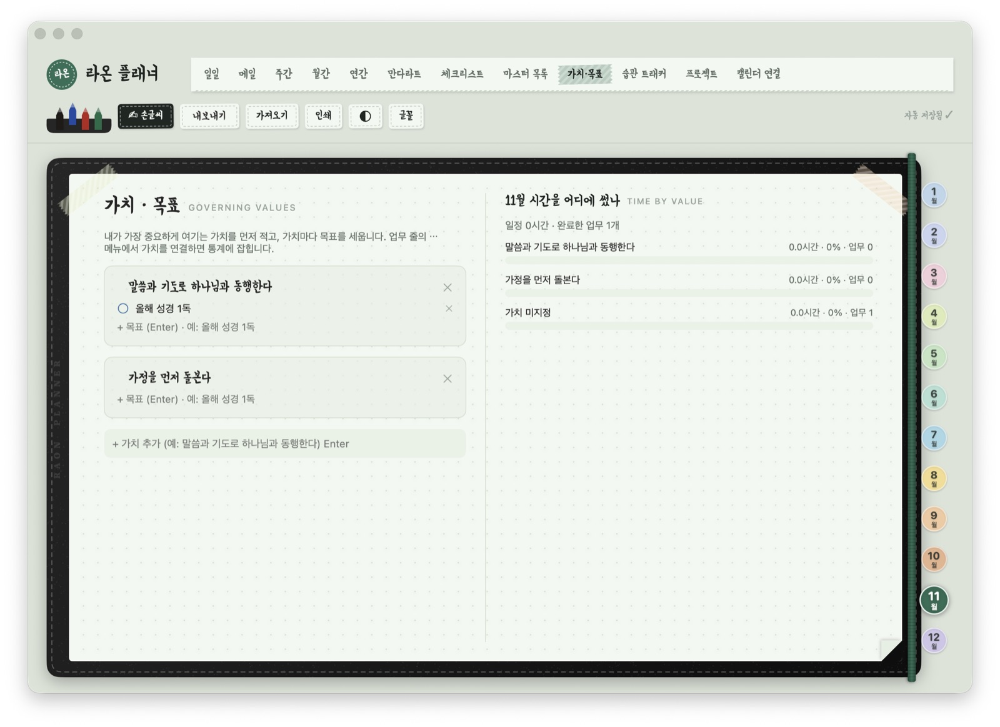

라온 플래너
무료 플래너 · 사진 설명서
맥 1.8.2 · 윈도우 1.4.2 · 안드로이드 1.9.2 · 2026년 11월
1. 라온 플래너는 · 네 가지 판
2. 설치하기 (맥 · 윈도우 · 안드로이드)
3. 처음 구글 로그인
4. 화면 둘러보기
5. 하루를 쓰는 법
6. 주간 · 월간 · 만다라트 · 가치와 목표 · 돌봄 기록부
7. 성경 · 글꼴 · 화면
8. 동기화와 백업
9. 자주 묻는 것 · 문의
1. 라온 플래너는
종이 종이 플래너의 흐름 — 가치 → 목표 → 오늘 할 일 — 을 컴퓨터와 휴대폰으로 옮긴 무료 플래너입니다. 구글 캘린더와 이어지고, 맥·윈도우·안드로이드에서 같은 자료를 씁니다.
| 맥 | 윈도우 | 안드로이드 |
|---|
| 우선순위 업무 · 일일 기록 · 습관 | ✓ | ✓ | ✓ |
| 구글 캘린더 (개인 + Workspace) | ✓ | ✓ | ✓ |
| 주간 · 월간 · 만다라트 · 가치와 목표 | ✓ (연간·체크리스트·마스터 목록 포함) | ✓ | ✓ |
| 오늘의 말씀 · 말씀 찾기 (목회자용·평신도용) | ✓ | ✓ | ✓ |
| 메일 요약 · Google Tasks · 아침·저녁 창 · 인쇄 | ✓ | | 아침 알림만 |
네 가지 판
받을 때 판을 고릅니다. 기능은 모두 같고 아래만 다릅니다. 설치한 뒤에도 설정 → 판(윈도우·휴대폰은 ⚙ → 판)에서 바꿀 수 있습니다.
| ⛪ 목회자용 | 🙏 평신도용 | 🤝 사회복지사용 | 📒 일반용 |
|---|
| 오늘의 말씀 · 말씀 찾기 | ✓ | ✓ | — | — |
| 이번 주의 격언 | ✓ | ✓ | ✓ | — |
| 체크리스트 템플릿 | 주일 예배, 심방, 교회 행사, 출장 | 교회 행사, 모임, 출장, 여행 | 가정 방문, 사례 회의, 프로그램 운영, 출장 | 모임, 출장, 여행, 이사 |
| 주간 계획 처음 역할 | 목회·가정·공부·개인 | 직장·가정·교회 봉사·개인 | 현장·기관·가정·자기 돌봄 | 일·가정·성장·건강 |
자료는 내 컴퓨터와 내 구글 드라이브의 앱 전용 숨김 공간에만 저장됩니다. 만든 사람에게 보내지지 않습니다.
2. 설치하기
안내 페이지 raon-easypaster.github.io/raon-planner 에서 ① 판을 고르고 ② 기기에 맞는 단추를 눌러 받습니다. 처음 한 번은 경고 창이 나옵니다. 유료 인증을 받지 않은 무료 프로그램이라 나오는 안내이니 아래대로 하시면 됩니다.
🍎 맥 (macOS 14 이상)
- 맥용 받기로 받은
RaonPlanner-Mac-(판).dmg를 두 번 누릅니다.
- 열린 창에서 라온 플래너를 Applications 폴더로 끌어 놓습니다.
- 응용 프로그램에서 라온 플래너를 엽니다. “확인할 수 없습니다”가 뜨면 [완료] → 시스템 설정 → 개인정보 보호 및 보안 맨 아래 그래도 열기.
- “키체인 접근” 암호 창이 뜨면 맥 로그인 암호를 넣고 항상 허용. (새 버전을 깔 때마다 한 번)
🪟 윈도우 (10 · 11, 64비트)
- 윈도우용 받기로 받은
RaonPlanner-Windows-(판).zip을 오른쪽 클릭 → 모두 압축 풀기. (압축을 풀지 않고 안에서 바로 열면 안 됩니다)
- 풀린 RaonPlanner 폴더에서 설치하기를 두 번 누릅니다.
- “Windows의 PC 보호” 파란 창이 뜨면 추가 정보 → 실행.
- 까만 창에 “설치를 마쳤습니다”가 나오고 라온 플래너가 열립니다. 바탕화면과 시작 메뉴에 라온 플래너가 생깁니다.
지우려면: 시작 메뉴 대신 %LOCALAPPDATA%\Programs\RaonPlanner 폴더의 제거하기를 두 번 누르세요. 자료(%APPDATA%\RaonPlanner)는 남겨 둡니다.
📱 안드로이드
- 휴대폰 브라우저로 안내 페이지를 열고 안드로이드 받기를 누릅니다. (컴퓨터에서 받았다면 텔레그램 ‘저장한 메시지’나 구글 드라이브로 옮기세요. 카카오톡은 설치 파일을 보내지 못합니다)
- 받은 파일을 열고 “이 출처의 앱 설치” → 허용을 켭니다.
- “Play 프로텍트” 경고가 뜨면 무시하고 설치. 검사에 1~2분 걸릴 수 있습니다.
- 알림 허용을 물으면 허용 (아침 7시 브리핑 알림에 필요).
3. 처음 구글 로그인
개인 Gmail 계정으로 먼저 로그인합니다. 이 계정의 구글 드라이브로 기기끼리 자료를 맞추고, 캘린더 일정을 가져옵니다.
| 맥 | 설정(⌘,) → 구글 계정 탭 → 구글 계정 추가. Workspace 계정도 같은 단추로 하나 더 추가합니다. |
|---|
| 윈도우 | 일일 화면의 구글 로그인 → 기본 브라우저가 열립니다. 로그인이 끝나면 “로그인이 끝났습니다” 화면을 닫고 프로그램으로 돌아옵니다. Workspace는 ⚙ 설정 → 워크스페이스 캘린더 → 계정 추가. |
|---|
| 안드로이드 | 첫 화면의 구글 로그인. Workspace는 ⚙ → 계정 추가. |
|---|
“Google에서 확인하지 않은 앱” 화면이 나오면
왼쪽 아래 고급 → 라온 플래너(으)로 이동(안전하지 않음) → 다음 화면에서 권한을 모두 체크하고 계속(허용).
구글의 정식 앱 심사를 받지 않은 무료 프로그램이라 나오는 화면입니다.
교회 Google Workspace 계정은 Workspace 관리자가 관리 콘솔 → 보안 → API 관리 → 앱 액세스 제어에서 ‘라온 플래너’를 신뢰할 수 있음으로 등록해야 로그인됩니다. 개인 Gmail은 바로 됩니다.
4. 화면 둘러보기

- 위쪽 탭: 일일 · 메일 · 주간 · 월간 · 연간 · 만다라트 · 체크리스트 · 마스터 목록 · 가치·목표 · 습관 · 프로젝트 · 캘린더 연결 (윈도우·휴대폰은 일일 · 주간 · 월간 · 만다라트 · 목표)
- 왼쪽 면: 큰 날짜(음력, 올해 몇 번째 날), 오늘의 명언, 우선순위 업무, 약속 및 일정(시간표)
- 오른쪽 면: 미니 달력, 오늘의 말씀(목회자용·평신도용), 이번 주 격언(13가지 — 일반용에는 없음), 일일 기록과 포스트잇
- 오른쪽 둥근 스티커 1~12월(맥): 누르면 그 달로 이동. ‹ 오늘 › 단추로 하루씩 이동
- 색연필(맥): 펜 색을 고르고, 손글씨를 켜면 업무와 기록이 손글씨 글꼴로 보입니다
윈도우

위쪽 검은 띠에 탭, ＋ 빠른 입력(Ctrl+K), 동기화, ⚙ 설정이 있습니다.
5. 하루를 쓰는 법
아침 — 오늘 할 일 정하기
- 맥은 아침 7시에 오늘의 브리핑 창이 뜹니다 (휴대폰은 알림). 오늘 일정, A 업무, 어제 남은 일을 봅니다.
- “어제 끝내지 못한 업무 ○개” → 오늘로 가져오기.
- A(반드시) · B(해야 함) · C(하면 좋음)를 고르고 할 일을 적고 Enter. 번호(A1, A2…)는 저절로 붙습니다.
낮 — 표시하기
| 표시 | 뜻 | 하는 법 |
|---|
| ✓ | 완료 | 네모를 누름 |
| • | 진행 중 | 맥: 업무 줄의 ⋯ 또는 오른쪽 클릭
윈도우·휴대폰: 업무 글자를 누름 |
| → | 내일로 이월 |
| ○ | 다른 사람에게 맡김 |
| ✕ | 하지 않기로 함 (기록은 남김) |
아예 지우려면 같은 메뉴의 목록에서 완전히 지우기.
일정 넣기 — 빠른 입력
맥 ⌥ 스페이스, 윈도우 Ctrl+K, 휴대폰 오른쪽 아래 ＋.
내일 오후 3시 심방 → 구글 캘린더 일정
다음주 수요일 10시~12시 교역자 회의 → 일정
A 주보 원고 → 오늘 A 업무 · 금요일 B 설교 개요 → 금요일 B 업무
한꺼번에 · 말로 넣기
빠른 입력에 쉼표나 ‘그리고’로 여러 개를 이어 쓰면 한꺼번에 들어갑니다. 예: 내일 오후 3시 심방, A 주보 원고 그리고 금요일 B 설교 개요
휴대폰은 빠른 입력의 🎤를 눌러 말로 넣습니다. 맥은 받아쓰기(🎤 키 또는 fn 두 번), 윈도우는 윈도우 키 + H 로 말하면 글자로 들어갑니다.
시간 잡기 · 집중 타이머
- 시간 잡기: 맥은 업무의 A1 같은 번호를 끌어다 오른쪽 시간표의 원하는 시각에 놓으면 그 시간으로 구글 일정 창이 열립니다. 업무 메뉴(⋯)의 📅 시간 잡기로도 됩니다 (윈도우·휴대폰은 업무를 누르면 나오는 메뉴).
- ⏱ 집중 25분: 업무 메뉴에서 누르면 타이머 창이 뜹니다. 마치거나 ‘그만’을 누르면 집중한 시간이 기록되고, 주간 화면에 이번 주 집중 시간과 업무별 시간이 나옵니다.
저녁 — 돌아보기
일일 기록에 오늘 있었던 일과 감사를 적습니다. 남은 일은 미완료 → 내일로 이월. 맥은 밤 9시에 오늘 돌아보기 창이 뜹니다.
6. 주간 · 월간 · 만다라트 · 가치와 목표

주간: 일요일부터 한 주의 업무와 일정. 맥은 일요일 저녁 8시에 주간 계획 시간 창이 떠서 역할별로 이번 주 ‘소중한 것 먼저’를 정합니다. 월간: 날짜를 누르면 그날 일일 화면으로.

만다라트: 가운데에 핵심 목표, 둘레에 세부 목표 8개, 그 바깥에 실천 항목. 맥은 + 새 만다라트로 이름(예: “2026 다이어트”)을 붙여 여러 개 만듭니다. 칸을 두 번 누르면 완료 표시, 오른쪽 클릭 → 오늘 업무로 보내기. 휴대폰·윈도우는 세부 목표를 누르면 실천 항목 8개가 크게 나옵니다.
돌봄 기록부 (목회자용 ‘심방·돌봄’, 평신도용 ‘챙길 사람’, 사회복지사용 ‘사례 관리’, 일반용 ‘사람 챙기기’): 사람마다 구역·관계, 생일, 전화, 기도 제목·메모를 적고, 심방·상담·전화 같은 기록을 남깁니다. 기록할 때 다음 연락(1주·2주·한 달·석 달 뒤)을 정해 두면 그날과 생일에 일일 화면과 아침 브리핑에 오늘 챙길 사람으로 나옵니다. 세 기기에 동기화되며, 자료는 내 기기와 내 구글 드라이브 앱 전용 공간에만 있습니다.
휴대폰 홈 화면 위젯: 홈 화면을 길게 눌러 위젯 → 라온 플래너를 놓으면 오늘 남은 업무와 챙길 사람이 보입니다.
체크리스트 템플릿 고치기(맥): 체크리스트 탭의 템플릿 고치기를 누르면 템플릿을 고치고, 항목을 더하고, 항목마다 ‘며칠 전’에 할지 적을 수 있습니다. + 새 템플릿으로 만들거나, 쓰던 체크리스트에서 템플릿으로 저장을 누릅니다. 고친 템플릿은 다른 맥에도 동기화됩니다.
가치·목표: 지배 가치(예: “말씀과 기도로 하나님과 동행한다”)마다 목표를 달고, 업무에 가치를 이어 이번 주 시간이 어디에 쓰였는지 봅니다. 습관은 날마다 동그라미 체크, 프로젝트는 단계별로.
7. 성경 · 글꼴 · 화면
📖 성경 넣기 (목회자용·평신도용)
개역개정 성경은 대한성서공회 저작권 때문에 들어 있지 않습니다. 가지고 계신 성경 JSON 파일을 넣으면 오늘의 말씀과 말씀 찾기가 됩니다.
파일 형식: {"창1:1": "태초에 하나님이 천지를 창조하시니라", "창1:2": "…", …}
맥: 설정 → 성경 → 가져오기 · 윈도우: ⚙ → 성경 → 파일 가져오기 · 휴대폰: ⚙ → 성경 → 파일 가져오기
말씀 찾기 칸에 요3:16, 시편 23:1-6, 창세기1장1절처럼 적습니다.
✍️ 글꼴

맥은 위쪽 글꼴 단추에서 제목·본문·손글씨 글꼴을 따로 고릅니다 (맥에 설치된 한글 글꼴 모두). 윈도우·휴대폰은 ⚙ → 제목 글꼴.
🎨 바탕색 · 말씀·격언 끄기
맥은 설정(⌘,) → 화면, 윈도우·휴대폰은 ⚙ 에서 바꿉니다.
- 바탕색: 연두(기본) · 크림 · 하늘 · 벚꽃 · 흰 종이 · 회색
- 오늘의 말씀 보이기 / 이번 주의 격언 보이기: 끄면 일일 화면·아침 창·인쇄에서 빠집니다 (판에 없는 것은 처음부터 안 보임)
🔔 새 버전 받기 (자동 업데이트)
- 새 버전이 나오면 가운데에 “새 버전이 있습니다” 창이 뜹니다. 지금 업데이트를 누르면 받아서 설치하고 저절로 다시 켜집니다. 자료는 그대로이고, 설치 전에 백업을 한 벌 만듭니다.
- 나중에를 누르면 하루 동안 다시 묻지 않고, 위쪽의 🔔 새 버전 단추로 언제든 다시 열 수 있습니다.
- 받은 파일의 확인값(SHA256)이 맞을 때만 설치합니다. 휴대폰은 설치 화면에서 업데이트를 한 번 눌러 줘야 합니다.
- 알림이 싫으면 설정에서 새 버전이 나오면 알려 주기를 끕니다.
🌙 화면
맥은 ◐ 단추로 밝게/어둡게. 일정 알림(10분 전, 화상회의 5분 전)은 설정 → 알림에서 켭니다.
8. 동기화와 백업
- 업무, 일일 기록, 습관, 만다라트, 가치·목표, 프로젝트, 주간 계획이 개인 Gmail 계정의 구글 드라이브(앱 전용 숨김 공간)로 맞춰집니다. 드라이브 화면에는 보이지 않고, 다른 파일은 보지 않습니다.
- 고치면 몇 초 뒤, 그리고 15분마다(휴대폰은 1시간마다) 맞춥니다. 바로 맞추려면 동기화 단추(🔄)나 맥 설정 → 지금 동기화.
- 같은 항목을 두 기기에서 동시에 고치면 나중에 맞춘 쪽이 남고, 다른 쪽 내용은 맥 백업 폴더의 ‘동기화충돌’ 파일에 남습니다.
- 모든 기기에서 같은 개인 Gmail로 로그인해야 자료가 맞춰집니다.
- 맥은 하루 한 번과 앱을 끌 때 iCloud Drive › 라온 플래너 백업에 자동 백업(30일). 내보내기 → 자료 전체 백업 파일, 가져오기로 되돌리기.

9. 자주 묻는 것
Q. 판을 잘못 받았어요.
다시 받을 필요 없이 설정 → 판에서 바꾸면 됩니다. 자료는 그대로입니다.
Q. 맥에서 키체인 암호 창이 또 떠요.
새 버전을 깔면 한 번 뜹니다. 맥 로그인 암호 → 항상 허용.
Q. 윈도우에서 설치하기를 눌러도 아무 일이 없어요.
zip 안에서 바로 누르지 말고 모두 압축 풀기를 한 뒤 풀린 폴더에서 누르세요.
Q. 일정이 안 보여요.
로그인했는지, 맥은 캘린더 연결 탭에서 그 캘린더의 ‘표시’가 켜져 있는지 확인하세요. 윈도우·휴대폰은 맥에서 켜고 끈 설정을 따릅니다.
Q. 휴대폰에서 고친 게 컴퓨터에 안 보여요.
컴퓨터에서 동기화(🔄)를 누르세요. 두 기기가 같은 개인 Gmail인지 확인하세요.
Q. Workspace 계정으로 로그인이 안 돼요.
“관리자가 차단한 앱”이 나오면 관리자가 신뢰 앱으로 등록해야 합니다 (3장).
Q. “다시 로그인해야 합니다”가 떠요.
같은 계정으로 다시 로그인하면 됩니다. 자료는 그대로입니다.
🙏 언제든 연락 주세요
카카오 오픈채팅: open.kakao.com/o/ghZQNlXi
안내 페이지: raon-easypaster.github.io/raon-planner
만든 사람: 쉬운목사 이광복 · 무료로 나눕니다